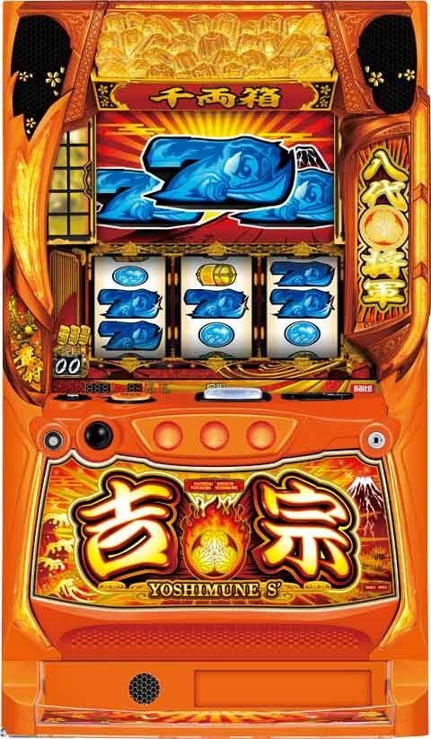
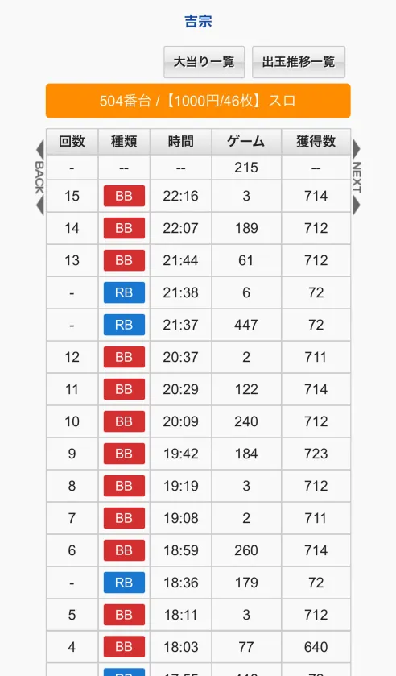
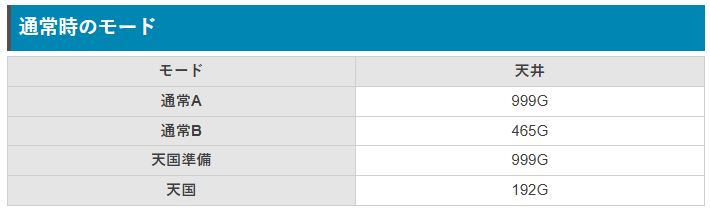
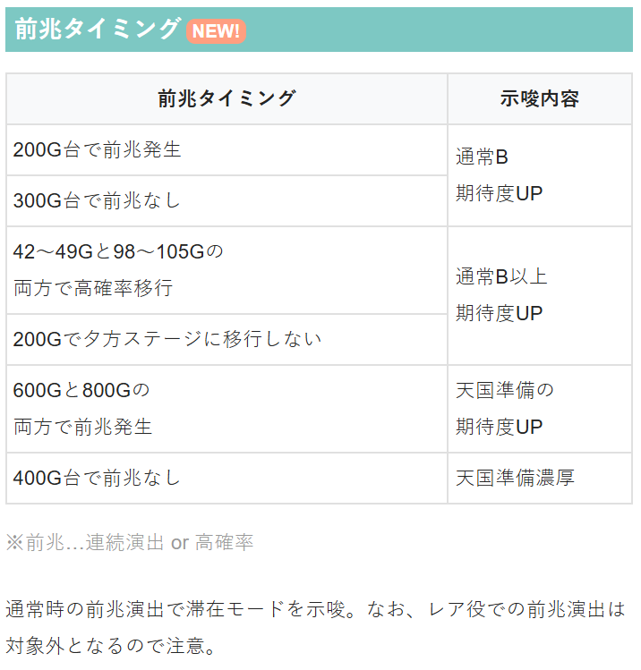
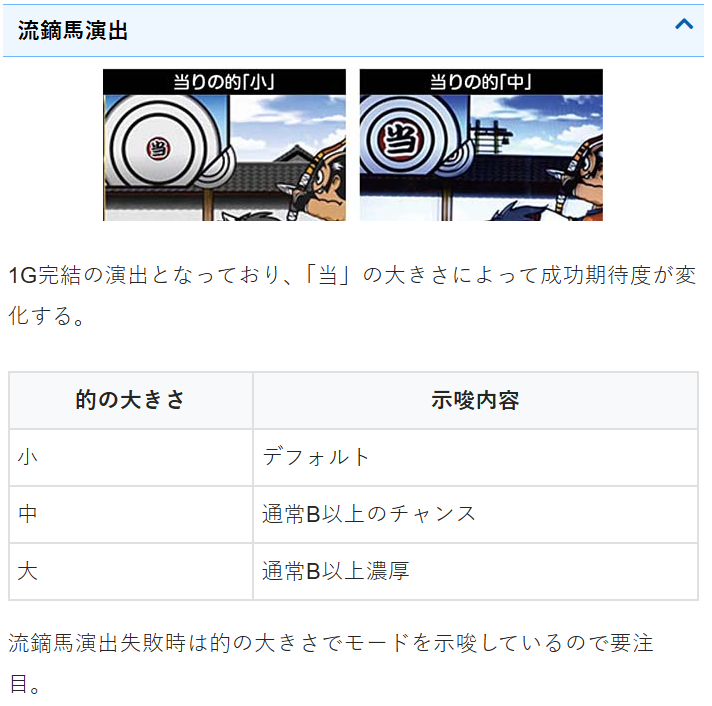
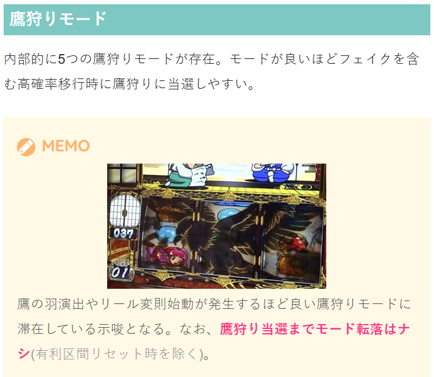
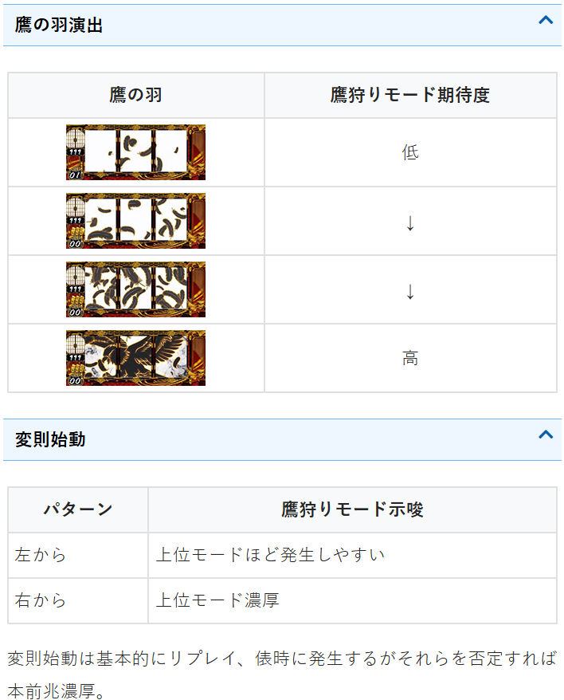

L吉宗

【天井情報】
999G ボーナス当選
【リセット判別】
不明
【有利区間について】
エンディングや差枚等で有利区間をリセットすると「裏鷹狩り」に突入!?
有利区間切断条件
差枚プラスで裏鷹狩り突入で有利切れ
差枚+1689（2400-711）枚以上で有利切れ
狙い目
※狙い目は液晶G数基準
【リセット狙い】
天井狙い 680Gから
朝一天国ゾーン狙い 70Gから天国ゾーン抜けまで
400ゾーン狙い 370Gから
※内部加算で少し早めに前兆来るかも？
【ボーナス間天井狙い】
680Gから
1G連後 0Gからボーナス当選まで（通常B以上濃厚）
1G連後を狙う場合は、BIG後は5G以内、REG後は3G以内の当選を1G連後と想定。
※1G連後の目安は5G以内のBIG当選。6GBIGは即前兆の可能性が上がる。7G以降は1G連後の可能性あるが、基本1G連後と思わない方が良い。1G連後は通常B以上という情報はかなり浸透しているので、店舗の客層によって判断が変わってくる。
※REG後の1G連履歴は、REG自体で1G連が発生しにくいため、3G以内を1G連後と判断するのが良さそう。
※例 6GBIG後→即前兆の可能性もあるため250Gハマってれば打つ。7GBIG→本来危険だが客層緩め店舗かつ250Gハマってれば打つ。
※例2 5GBIG→本来193やめは打てるが、前任者が知識ありそうな人なら即前兆当選後天国確認してやめたかもしれないなど、現場の状況も考慮する。
※1G連後に次回天国内で当選した場合は1G連後の恩恵は無いので注意を。
【通常B以上狙い】
通常B以上濃厚 通常B天井まで（液晶460G前後）
裏鷹狩り抜け後の１回目天国当選後の天国抜け後 300Gから通常B天井まで（液晶460G前後）
※裏鷹狩り抜け後は天国確定だが、その天国が1回のみで天国を抜けた場合は通常B以上の可能性大幅アップ（実践データ上60％前後）
※示唆等で押し引き出来るケースが出てくるかも？
【ゾーン狙い】
400ゾーン（モードB天井） 410Gから（450G前後に当選分布あり）
【鷹狩りモード狙い】
モードは5段階あり。詳細不明。
鷹の羽演出
鷹の羽演出で鷹が出現（4段階中4番目）した場合は鷹狩り当選まで。
4段階中3番目の演出は強くない。少しボーダー調整に影響が出る程度？
ボーナス終了画面のボイス
「鷹狩りの準備は～」鷹狩りかなり近い 鷹狩り当選まで
「鷹の鳴き声が～」鷹狩り近い 閉店まで3時間以上あれば鷹狩り当選まで
リール変則始動
高モード示唆だが鷹狩り当選までかなりG数を要するケースがあるため、ボーダー少し下げる程度
右リール変則始動 鷹狩り高モード示唆
左リール変則始動 頻出で高モード示唆
【有利区間関連狙い】
不明
やめ時
ボーナス後に液晶193Gまで回してヤメ。
筐体上部小判の点滅は天国ゾーンを表しているため、193G超えて小判の点滅が消えたらヤメ。
なお、193G以内の当選の内、100G以内に当選する割合は約30%。
150-200Gの高確率ゾーンが抜けても193Gまで前兆の有無確認を推奨。
180G過ぎで高確率ゾーン抜け、数G後演出頻出190G前後でボーナス確定というケースが複数あり。
192Gで急に確定演出が来たケースあり。
液晶193G手前で落ちている台は193Gまで回した方が良さそう。
ボーナス後即やめ出来る条件について
すろらぼにコラムで記載されています。当選履歴や示唆等の条件で即やめ出来るケースがあるという内容です。実践した方が稼働効率が上がると思われますので、すろらぼに加入されてる場合は読んだ方が良いです。この内容を実践して即やめされる台も増えてきそうですが、30Gくらいハマっていれば不問で天国消化出来ます。
その他
2-5Gは1G連の履歴と思われる。
基本5G以内であれば1G連後となる。
REGからの1G連獲得は確率が低いため、3G以内を1G連と想定する。
6G以降当選履歴は即前兆からの当選も混ざるため1G連後ではないケースあり。
1G連のボーナス告知で9Gまで引っ張れるケースあり。
下記データ21:37の6G.RBは即前兆からの当選と思われる。（1G連でRBは出て来ないため）
5G以内BBを1G連後想定で打つのが確実。





